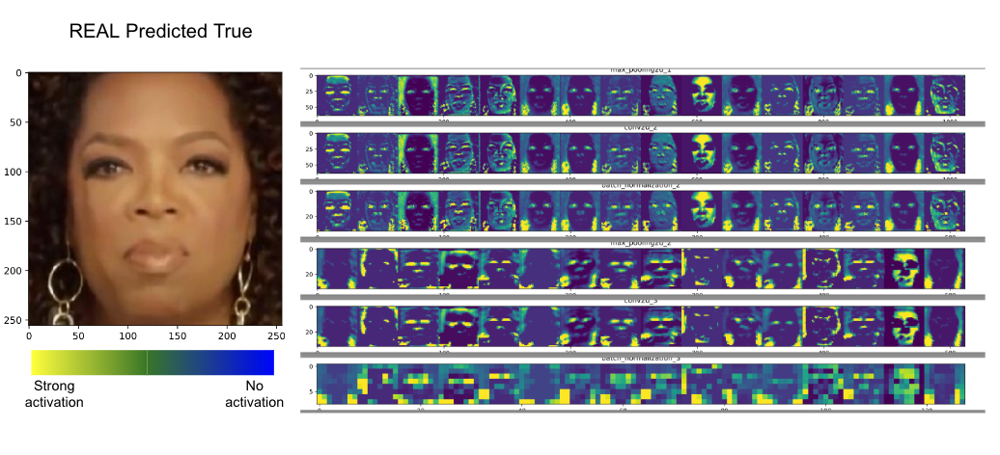
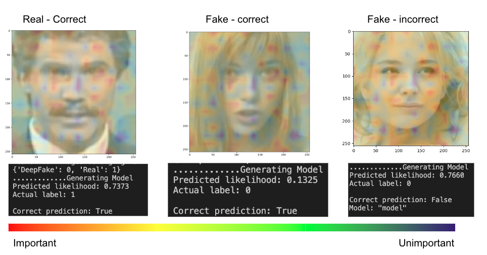

April 22
First Draft of proposal due
CSE161 Final Project Kimi Holsapple
kholsapp@ucsc.edu
Fake and altered images are everywhere from social media filters to funny photo shopped meme posts. While ubiquitous, it doesn't necessarily mean its all good. The phrase has also been connected to fake news, advertisements, destroying reputation, and even cases of blackmail and revenge.
Although fake images aren't new like famous examples like Nessie the lochness monster, they remain prevelant, more persuasive, and easier than ever to create.
This project aims to discuss a simple strategy to detect altered images of people’s faces using Convoluted Neural Networks. Meso-4 was the model of choice and two visualizations were implemented in python in order to perceive the important features for the model. These include feature mapping and Grad-CAM which aim to expose the activation mappings of the model and the influence of areas for the task of classification respectively.
The scope will be limited to human faces. At this time, other objects will not be considered due to complexity beyond this course.
Furthermore, there will be no video viz and still images will be only processed. The feature map and cam viz will be used to create robust images that will stay within the timeline.
This model was developed by researchers in Japan and France specifically for fake image detection here It is a simple model that utilizes the mesocopic features of images in order to preform calssification. Each convolution layer utoizes ReLu activation with the final layer passing inputs to a sigmoid function.
This model was pretrained and weights were loaded in for use to create the visuliations below. The model architecture and performance is described here in this image created by the original authors.

Feature maps are the activation maps for the layers of our model. Higher activation indicates that the model is recognizing those specific features. The Furthermorethe layers go, the lower the resolution becomes to capture more general features.
This can be created in python using the Keras and mathplot library and is mapped to viridis coloring to create a heatmap of features for each layer.
CAM is a newer technique and can be used to interpret decisions made by neural networks. It employs object localization allowing users to see what objects are distinguished by the model.
First Draft of proposal due
Finish Preprocessing data set
Build Model
Analyze Results
In class presentation
Generate Viz
Prepare Final report and presentation
Final Presentation